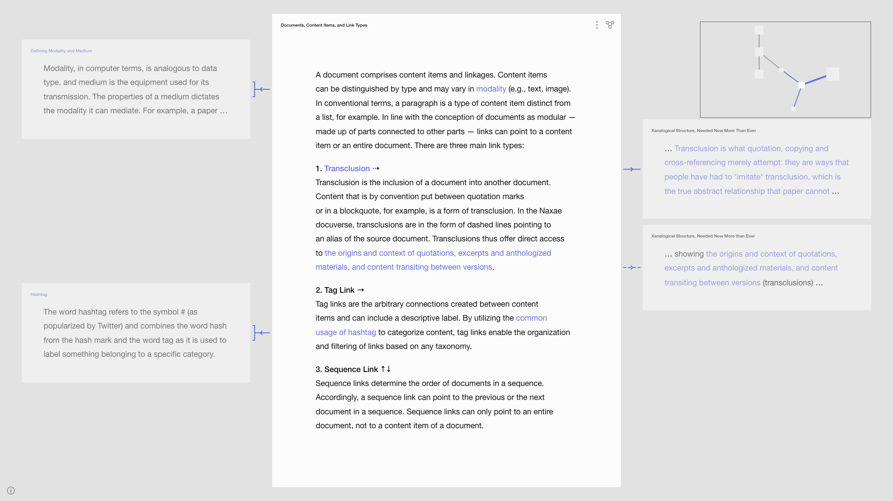
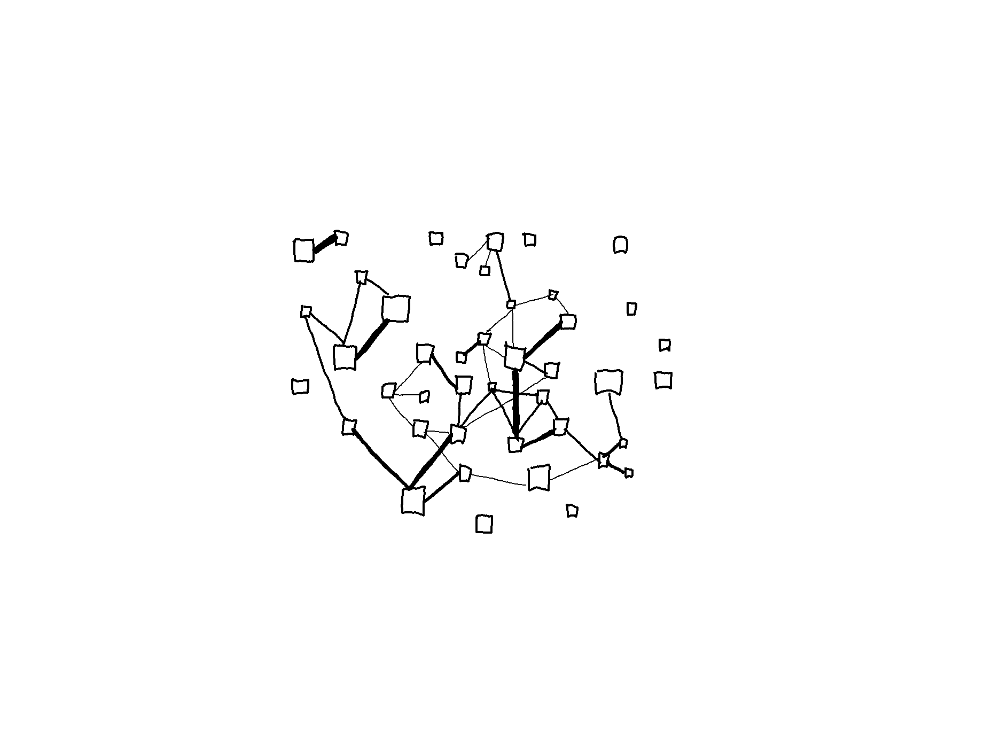
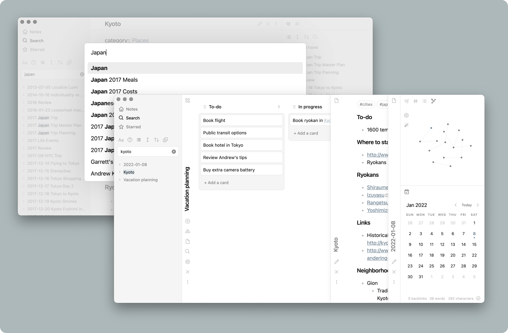

Reflection and Further Developments
Research Question
In creating a docuverse, what may result from reworking (and taking new approaches to representing and interacting with) concepts derived from prominent examples of systems that accommodate interconnection?
What are those prominent examples?
Why did you choose them?
- Considered influential to the evolution of information technologies and knowledge systems %%explain%%
- All three examples are grounded in a philosophical position about the structure of ideas and evolution of knowledge.
- To illustrate:
- that hierarchical categorization of knowledge is not intrinsic to print (particularly the Encyclopédie)
- the three systems comprise similar concepts but are limited by the medium used for its realization/implementation (particularly the work of Otlet)
- the computer can be embedded with any conceivable construct, which is a potential worthwhile exploring in re-imagining a document system.
Through examination, some of the concepts and features of the three examples were deemed suitable for reflecting that philosophical position, and therefore reworked in creating a docuverse based on accommodating interconnection.
Which aspects and concepts have been reworked, and how?
- Modularization of documents.
- Links distinguished according to the type of connection.
- Multiple renditions of content.
- A closed system aspiring to be open.
%%Insert small paragraph explaining how these derive from those examples%%
%%Which are not from those historical examples?%%
1. Modularization of documents
The structure of ideas are non-sequential. Hierarchy and sequence should not be the predominant structures that everything must fit into. A document system must therefore support mapping multiple structures. The evolution of knowledge is a process of decomposition/recomposition, analysis/synthesis. Therefore, a document system should facilitate and support that process by modularizing documents.
In line with the conception of documents as modular — made up of parts connected to other parts — all connections to/from a document are implemented as visual links and the linked documents are represented as aliases, providing direct access to those linked documents. In contrast to web pages viewed in browsers, documents are not viewed in isolation, neither does selecting a link involve blindly landing on a page. An open document (in Lateral View) has its linked documents represented as aliases which make clear the destination of the link (including the link direction and the link endpoint). Selecting an alias opens that linked document, while the previously opened document transforms into an alias. Example: imagine Document A is open and has several links to Document B. Selecting an alias of Document B transforms Document B to an open document and transforms Document A to an alias.
2. Links distinguished according to the type of connection
Conceptual categories:
- Link Type
- Link Direction
- Link Endpoint
Links are visually distinguished according the type of connection that can be established. All connections belong to one of the three main link types:
- Tag link –#–
- Transclusion —-
- Sequence link ↓

1. Tag link
Tag links are the arbitrary (conceptual) connections created between content items and can include a descriptive label (to describe that conceptual category). By utilizing the common usage of hashtag to categorize content, tag links enable the organization and filtering of links based on any taxonomy.
Note: Tag links replace such concepts as footnotes. Unlike tag links, with footnotes it is not possible to create nor indicate categories within all the footnotes of a document (e.g., a comment, a reference, a definition). There is also no implicit hierarchy, rather multiple sequences are offered (e.g., the paragraph-by-paragraph sequence and the branches of linked documents).
2. Transclusion
Transclusion is the inclusion of (a part of) a document into another document. Content that is by convention put between quotation marks or in a block quote, for example, is a form of transclusion. In the Naxae docuverse, the visual form of transclusions are dashed lines pointing to an alias of the source document. Transclusions thus offer direct access to the “origins and context of quotations, excerpts and anthologized materials, and content transiting between versions” (Nelson 1999).
Note: By convention (derived from paper documents) content of digital documents is literally copied (onto the construct called clipboard) and pasted (with a citation if taken from another source), whereas in the Nexae docuverse content items are never duplicated, they are transcluded (with a transclusion type link and an alias of the linked document).
3. Sequence Link
Sequence links determine the order of documents in a sequence. Accordingly, a sequence link can point to the previous or the next document in a sequence. Unlike transclusions and tag links, sequence links can only point to an entire document, not to a content item of a document. To create a nested structure within the sequence (i.e., hierarchical order), headings in a document can be applied. The sequential order of documents (and the possible hierarchical order of content items within a document) co-exists with the order offered by the other two link types.
Note: How sequences and hierarchies are organized can vary. For example, one sequence might be a set of documents that each contain one content item. This sequence would be akin to the concept of a chapter. Another sequence might be a set of documents containing multiple content items that belong to sections within a document (established through headings). This latter sequence is similar to a set of chapters or a chapter with sub-chapters.
The visual distinction of the three link types and the subcategorization enabled by tag links.
The means of visually distinguishing different categories of information is by convention done typographically. The main text is in a large font size and additional information, such as footnotes, is in a small font size, implying a hierarchical relationship.
In the Nexae docuverse, information categories are assigned through the three link types, not a predefined hierarchical structure. So information that is by convention embedded as footnotes would be in separate documents to which metadata can be attached and a tag link label that describes the connection. There is no implicit hierarchy and through filtering, it is possible to view a subcategory of the additional information.
To convey further information about a connection, beyond the three link types there are two link directions and two link endpoints.
Link direction denotes whether:
- a connection is established to a document, or
- from a document.
Most common on the web are one-directional links, pointing to another website (external) or webpage (internal). This link mechanism forms a linear sequence structure. Additionally, once you select a link, that webpage does in any way indicate that it has been linked to, so once you select a link, the only way to retrieve the original document is to backtrack, (in a browser that mean selecting the back button).
Less common are backlinks, often implemented in what are called digital gardens. Backlinks are links that point from another document. If Document A contains a link to Document B, then Document B contains a backlink to Document A. Platforms such as Roam Research is known for popularizing backlinks, and others like Notion have followed suit. Usually backlinks are presented as a list, and commonly at the bottom (like footnotes) as seen in the images below.

In the example above, selecting a backlink results in instantly landing on a page. In the example below, selecting a backlink results in the document opening on the side, enabling comparison of the two linked documents and without leaving your current place. %%This supports …%%
In Notion backlinks are hidden, and only upon deliberate action is the list expanded. Additionally, the list is underneath the title, not at the bottom.

In all these examples, links pointing outward are inline hyperlinks, and links pointing inward are in a separate list. This means that the backlinks do not make available where exactly the document has been mentioned (the link endpoint), it also does not indicate how many times it has been mentioned (the number of links).
In Nexae, outward and inward links are not separated, both are inline and the arrow symbol indicates the link direction. Additionally, because links can be attached at the level of the content item, unlike backlinks, the endpoint of a link provides direct access to the particular part of a document.
Link endpoints describes whether there is a connection to:
- an entire document or
- a part of a document.
For example, the following sample sentence is a reference type of connection that points to an entire document:
“In What Are Data, Christine Borgman reconceives ‘data’ through an etymological examination of ‘captum’ and ‘datum’.”
By naming the title, a connection to the entire document is established. The sentence below, by naming specific examples, establishes connections to several parts of the document.
“In What Are Data, Christine Borgman examines different conceptions of data, from Paul Uhlir and David Cohen’s definition of data, to the Data Documentation Initiative and NASA categories of data.”
%%insert visual implementation%%
3. Multiple renditions of content
Switching View Modes and Traversing Documents
The two view modes are each different renditions of documents and linkages. Both view modes are based on conveying (different) information about the connections among documents. Inventory View is at the level of the collection and Lateral View is at the level of the document. Differing in the level of detail, Inventory View is the zoomed out view and Lateral View is the zoomed in view.
Inventory View is a network diagram using a node-link model. All documents are viewed in relation to each other, conveying information about the size of each document (node size) and number of links (line thickness). Functioning as an infographic, it allows understanding of a lot of information at a glance.
Inventory View:
In Lateral View one document is viewed in more detail, conveying information about the type of connections to/from that document.
Lateral View (with a location frame of Inventory View in the upper-right corner):

Additionally, documents and links can be filtered so that only a subset of the docuverse is in view.
Note: these features are a solution to the problem of the complex information that results from mapping the various connections among documents.

Switching view modes involves transition animations suggesting the movement of zooming in and out on documents. Switching from Inventory View to Lateral View is done by opening a document, which is equivalent to zooming in on a document.

While in Lateral View (i.e., having opened a document), opening a linked document by selecting one of its aliases also brings about a transition animation. Additionally, a location frame shows the open document as an active node seen through the perspective of Inventory View (in the upper-right corner). Originating from cartography, the location frame is implemented for the purpose of orientation. Location frames are often implemented in software for editing media that involves zooming in and out on content (e.g., Adobe Illustrator, Miro, DaVinci Resolve).
In contrast, opening web pages by selecting hyperlinks occurs instantly (i.e., landing on a page without a transition animation) and does not make the destination clear. There are some implementations on the web that attempt to make the destination of links more clear, such as the preview windows seen in Wikipedia (but only for internal links, i.e., other Wikipedia pages).

These windows support quick decision-making for opening a link based on whether it is relevant or useful content. However, these preview windows pop up and overlap the content you are currently consuming, demanding attention and requiring deliberate action to get a glimpse. To circumvent these issues, NamePerson implemented preview windows in such a way that they appear in a side panel, rather than on top of the content.

In Nexae, linked document are idle aliases that are always visible (unless hidden by filtering links and documents).
Additionally, the preview windows in the examples above only show the top part of the linked web page, not indicating whether the connection points to a particular part.
In the Nexae docuverse, links can be attached on the level of the document but also on the level of the content item. Aliases can therefore bring into view the particular content item to/from which the open document is linked. The visual form of the link additionally aid in conveying whether the connection points to the entire document or a part of the document.

A bracketed link indicates that it is attached to the entire document and an unbracketed link indicates that it is linked to a particular content item within the document (in which case, the linked content item is displayed in purple).
%%Discuss reflect on why it is like this%%
The insight gained from examining the Encyclopédie is that the entire contents can be arranged in a nested list (hierarchical structure) but can also be arranged in a node-link map to show the interconnective structure. Both structures can be mapped, and both are different lenses onto the contents, functioning as infographics and offering different entry points. So though this project is based on accommodating interconnection, it does not intend to abandon hierarchical and sequential arrangements but to not give it predominance. Again, documents are modular, multiple structures co-exist.
Implementing two view modes is also an attempt to further develop Nelson’s implementation of Xanadu, by dealing with the complexity that comes with mapping different structures.
Similar to Xanadu, Nexae abandons the idea of embedding information, rather metadata and links are attached. Improving on the implementation of Xanadu, in Nexae
- conceptual categories are visually distinguished by applying a diagrammatic visual language.
- all references are present (represented as aliases with direct access to the referenced document).
On a web page, a content list or navigation sitemap provides you with an overview of the structure of a website. Selecting a list item directs you to the web page instantly. There is no longer an overview and you do not know exactly where you are anymore. Looking at a list conveys the hierarchical structure of the website. The amount of information and number of links are also not available to you.
Rather than tree-structure of the file system, or the chronological structure of the blog format, the document collection is represented as a node-link network. Entirely based on the interconnective structure, conveying information about the quantity of links and size of documents whereby the individual document is distinguished by title.
Note: the display of titles should be configurable in the settings so that instead of titles, another variable from the metadata is displayed, such as author (further discussed in the Future Developments section)) The arrangement of the node-link network should also be configurable (note that the default is set to “arrange by sequence links”).
4. A closed system aspiring to be open
In line with Nelson vision of Xanadu, people should be able to decide which documents are private/offline and which are public/online.
Note: similar to how Git works, there should be a staging area.
Examples:
Digital gardens are very similar to the Encyclopédie in that they are semi-closed systems, meaning there is emphasis on internal links but means of establishing external links is possible. In most digital gardens, internal links and external links are usually visually distinguished.
%%insert image example%%
Nexae does not offer external links, because it is based on having everything in one place in order to properly accommodate interconnection. As mentioned, the concept of transclusion dictates that concepts such as copying and pasting (derived from paper documents) are not possible, rather content is transcluded. That is to say, if content is taken from another document by another writer then it is done by inserting it into a document upon which a link is automatically generated.
A problem that emerges is how open can such a system be with regard to copyright issues. Another question is, based on the premise that there can be no copies, what happens if a document is made public/online that has already been added by someone else? If a document has already been added to the Nexae docuverse, then the added document would have to be merged with the existing document.
What does the prototype offer (at this stage)?
Nexae is the result of reworking those aforementioned concepts and the incorporation of a diagrammatical visual language, features from contemporary software for editing media, and the appropriation of the contemporary usage of hashtags, and utilization of transition animations.
The prototype at this stage offers premapped sample content. It is not possible to edit or add documents and links. An edit mode needs to be developed.
It is possible to traverse documents by selecting a document in Inventory View to enter Lateral View and select linked documents.
It is possible to filter documents and links in Inventory View, enabling people to enter a subset of the docuverse.
The default arrangement of documents and links in Inventory View is set to “arrange by sequence links,” but many other arrangements based on the metadata and link types are possible and should be configurable.
The default interface should also ideally be configurable (e.g. color-coding tag links according to their label).
The prototype functions as a closed system that aspires to be open.
What needs to be explored or developed further, and how?
Key features that still need to be developed:
- An edit mode.
- Filtering documents and links.
- Arrangement of documents and links.
- Configurability.
- Overlapping links.
- From a closed system to an open system.
1. An edit mode
The prototype allows only for accessing the premapped structures of the sample content. This means that the option to edit documents, links, or metadata is not yet possible.
A problem that arises when implementing an edit mode is: what happens when adding a document with references to other documents that have not been added to the Nexae docuverse?
Note: Transclusions dictate that all referenced documents must be directly accessible.
This could involve a prompt, asking whoever is adding the document to also add the referenced documents or a computer program that searches the web for the linked documents and adds (and transforms) them automatically. If the documents are not found, then what would a missing linked document look like?
Another problem to solve when implementing an edit mode is: what happens when adding documents that contain concepts that have been abandoned, such as footnotes and citations?
Adding a document with several footnotes could entail each footnote becoming a separate document linked to the added document as a tag link.
 Through NLP techniques, suggestions for labels of the tag links and metadata to the document could be provided, which the user would manually confirm. Or the suggestions could be skipped and the tag link labels would have to be done manually.
Through NLP techniques, suggestions for labels of the tag links and metadata to the document could be provided, which the user would manually confirm. Or the suggestions could be skipped and the tag link labels would have to be done manually.
2. Filtering documents and links
Filtering documents and links offers a way to deal with the complexity of information. Within a closed system, the taxonomy created through tag links could be organized according to presets. It would allow people to navigate the docuverse by viewing only a subset based on presets, instead of (de)selecting each tag individually.
In an open system, multiple taxonomies would co-exist. It should be possible to select a taxonomy developed by other people, and any person could have a number of taxonomy organized as sets of presets. Similar to how there are citation conventions, we can imagine that the development of a taxonomy can be shared among groups. Although all metadata would be available in an open system, there should be means for only having a particular selection displayed according to presets.
3. Arrangement of documents and links
Beyond utilizing metadata for filtering, it could also be utilized for organizing documents in Inventory View to gain an infographic-like overview. Functioning as an infographic, Inventory View allows understanding of a lot of information at a glance.
Let’s say for example, that we are investigating the concept of evolution. Our Inventory looks like this:

In the menu we select #evolution (or a preset named Evolution that contains a set of related tag labels) so our inventory looks like this:
 From here it should be possible to arrange the documents according to the set sequences (determined by the established sequence links).
From here it should be possible to arrange the documents according to the set sequences (determined by the established sequence links).
 Or, according to the date of publication, rendered in a timeline view:
Or, according to the date of publication, rendered in a timeline view:

The idea being rearranging the configuration of the nodes and links to get different renditions of the collection of documents, i.e., different infographic-like overviews.
4. Configurability
The default configuration of Inventory View displays the title of a document above each node, but any metadata could be replace it (e.g., year, particular tag, author).

Similar to most plain text editors (Atom, Sublime Text 3,) and Markdown editors (Obsidian, Typora) , it should also be possible to configure the UI theme.
Obsidian, for example, can be configured to have documents stacked side by side as sliding panels:

Or as multiple windows in different sizes within the main window:

5. Overlapping links
The idea is that instead of embedding links (and metadata), it is attached. In this way, links are an overlay on top of the content, however, the interaction and visual implementation of overlapping links still needs to be explored.
%%sketch of alias deck%%
%%sketch of multiple links as a number%%
6. From a closed system to an open system
- Open system (means:)
- Plurality of writers, readers, link mappers.
- Copyright issues.
%%it might look something like this or this%%
Closed systems
Semi-closed systems
Examples of semi-closed systems are Wikipedia and digital gardens, which both have internal links and external links.
The inline links in Wikipedia for example, all point to other Wikipedia pages. The footnotes are used to link to references of external sources.
Open systems
If the Nexae docuverse is to be further developed into an open system, then several design problems arise.
%%list them%%
- Moderation %%compare to Wikipedia%%
%%Conceptually how do you position Nexae. Example of use-cases of this and this…just elaborate. discuss whether there are moderators like Wikipedia%%